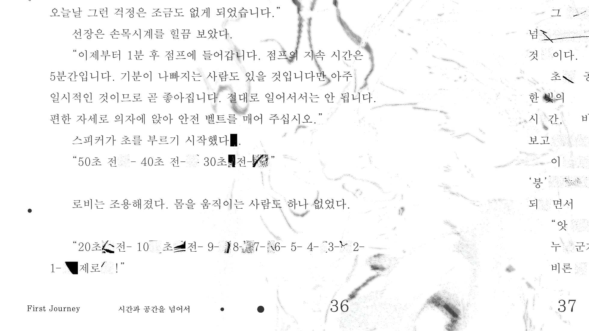
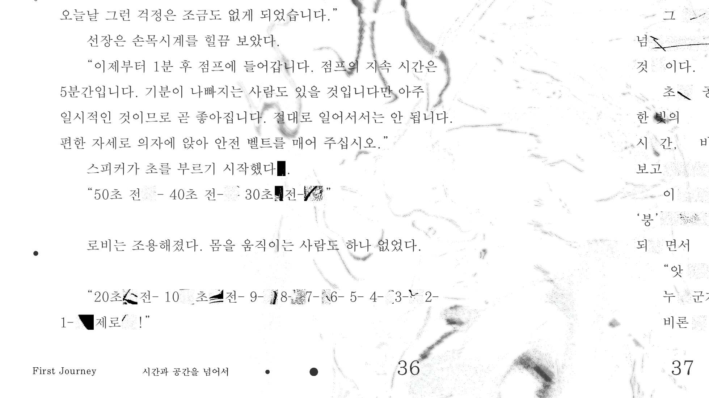
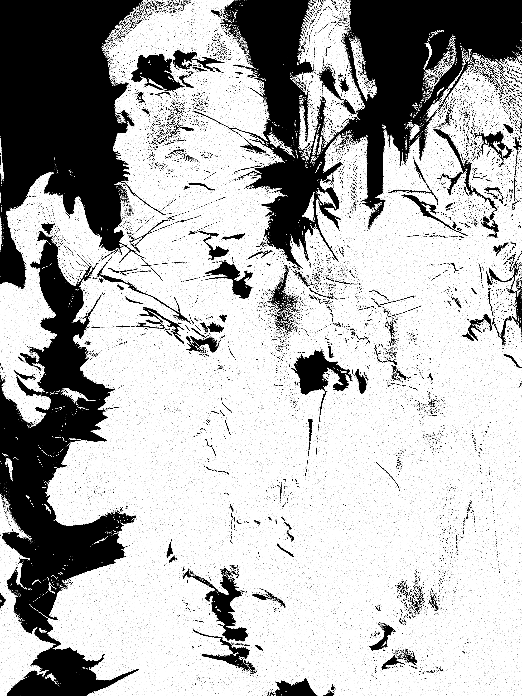
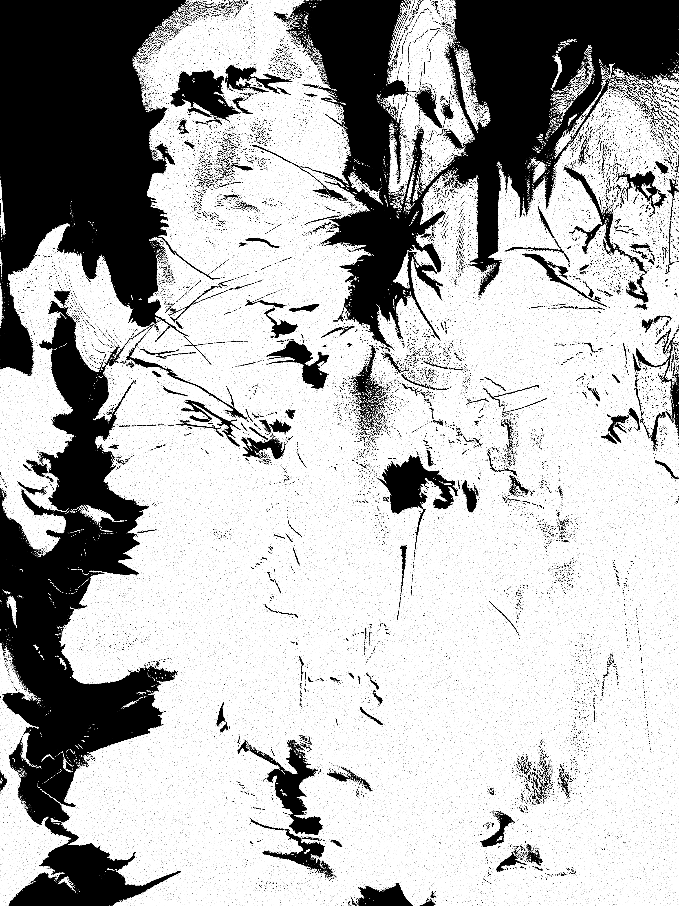

 


 The Stars Like Dust
2023
The Stars Like Dust
2023
The identity of the book was designed with the keyword of traveling the space through the space jump.
The cover depicts the main character's space travel, and inside, it is composed of a graphic depicting the space jump.
On the space jump page, graphics were put between syllables so that the letters were not read normally and the reading
speed was delayed as if space and time were flowing abnormally.